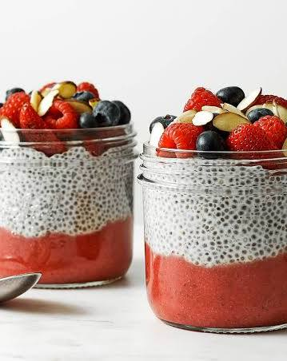

Berry Chia Seed Pudding

Ingredients
- 1/4 cup chia seeds
- 1 cup almond milk (or coconut milk)
- 1 tablespoon maple syrup (or honey)
- 1/2 teaspoon vanilla extract
- 1/2 cup fresh berries (like strawberries or blueberries)
Method
- Mix the Base: In a glass jar or a medium bowl, pour in the chia seeds, almond milk, maple syrup, and vanilla extract.
- Whisk Thoroughly: Whisk the ingredients together well. Let the mixture sit for 5 minutes, then stir it again to prevent any clumps from forming.
- Chill and Set: Cover the jar or bowl and place it in the refrigerator. Leave it for at least 2 hours, or overnight, until it thickens into a pudding texture.
- Garnish: Take the pudding out of the refrigerator and stir it one final time.
- Serve: Top the chia pudding with the fresh berries right before eating.
Description
A creamy, naturally sweet, plant-based dessert packed with healthy dietary fiber and antioxidants.